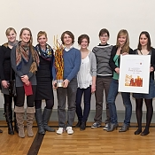
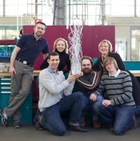

Wir sind dankbar für das persönliche und finanzielle Engagement, mit dem unsere Mitglieder zur Förderung und Entwicklung der Ruperto Carola beitragen. Studierende und Ehemalige im In- und Ausland, Heidelberger Bürger:innen und Unternehmen setzen sich als Ratgeber, Botschafter, Kooperationspartner oder Geldgeber für die Ziele der Gesellschaft ein. Ihre Zeit, Ideen, Ihr Wissen, Ihre Erfahrungen und Verbindungen sind für uns von großem Wert. Beispiele:

Studentische Mitwirkung
Seit vielen Jahren setzen sich Studierende für den „Preis der Freunde“ ein: Sie kümmern sich um die Ausschreibung, sichten Bewerbungen und bereiten als studentische Juror:innen die Auswahl vor. Bei der Preisübergabe hält eine:r von ihnen die Laudatio auf die prämierte Projektgruppe.
Aktive Alumni
Ehemalige Studierende, Mitarbeitende und Wissenschaftler wie der Regisseur Gero von Boehm oder der Schriftsteller Peter Bieri bereichern unsere Veranstaltungen als Redner, Diskussionspartner, Moderatoren oder Multiplikatoren.

Unternehmen
helfen uns mit Know-how, professioneller Dienstleistung und Spenden: von der Vereinsbuchhaltung über Geschäftsberichte und Rechtsberatung bis zu Druckkosten – und dem Wanderpokal „Preis der Freunde“, der in einer Ausbildungswerkstatt entstand.
Möchten auch Sie sich engagieren? Dann sprechen Sie uns an – wir freuen uns über Ihre Ideen und Ihr Interesse: freunde@uni-heidelberg.de